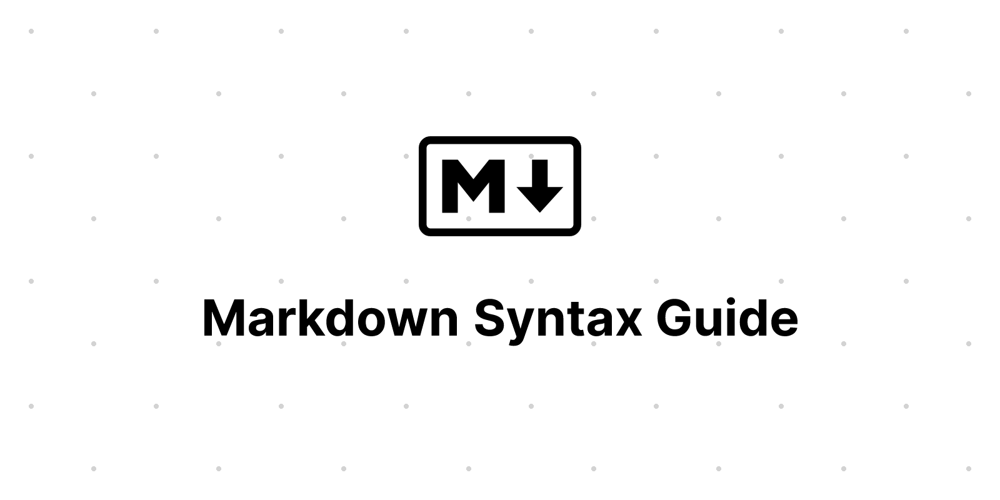

Markdown-syntaksin opas

Tämä artikkeli tarjoaa esimerkin perus-Markdown-syntaksista, jota voidaan käyttää Zolan sisältötiedostoissa. Lisäksi se näyttää, kuinka perus-HTML-elementit on muotoiltu CSS:llä Linkita-teemassa.
Otsikot
Seuraavat HTML-elementit <h1>–<h6> edustavat kuutta eri tason osio-otsikkoa. <h1> on korkein otsikkotaso ja <h6> on matalin.
H1
H2
H3
H4
H5
H6
Kappale
Xerum, quo qui aut unt expliquam qui dolut labo. Aque venitatiusda cum, voluptionse latur sitiae dolessi aut parist aut dollo enim qui voluptate ma dolestendit peritin re plis aut quas inctum laceat est volestemque commosa as cus endigna tectur, offic to cor sequas etum rerum idem sintibus eiur? Quianimin porecus evelectur, cum que nis nust voloribus ratem aut omnimi, sitatur? Quiatem. Nam, omnis sum am facea corem alique molestrunt et eos evelece arcillit ut aut eos eos nus, sin conecerem erum fuga. Ri oditatquam, ad quibus unda veliamenimin cusam et facea ipsamus es exerum sitate dolores editium rerore eost, temped molorro ratiae volorro te reribus dolorer sperchicium faceata tiustia prat.
Itatur? Quiatae cullecum rem ent aut odis in re eossequodi nonsequ idebis ne sapicia is sinveli squiatum, core et que aut hariosam ex eat.
Lainauslohkot
Lainauslohko-elementti edustaa sisältöä, joka on lainattu toisesta lähteestä. Siihen voi valinnaisesti liittää lähdeviittauksen, jonka tulee olla footer- tai cite-elementin sisällä, sekä rivinsisäisiä muutoksia, kuten huomautuksia ja lyhenteitä.
Lainauslohko ilman lähdeviitettä
Tiam, ad mint andaepu dandae nostion secatur sequo quae. Huomaa, että voit käyttää Markdown-syntaksia lainauslohkon sisällä.
Lainauslohko lähdeviitteellä
Älä kommunikoi jakamalla muistia, jaa muistia kommunikoimalla.
— Rob Pike1
Linkit
Luodaksesi linkin, laita linkkiteksti hakasulkeisiin ja heti sen perään URL-osoite kaarisulkeisiin.
Voit muuttaa URL-osoitteen tai sähköpostiosoitteen nopeasti linkiksi laittamalla sen kulmasulkeiden sisään.
Kuvat

Taulukot
Taulukot eivät ole osa Markdownin ydinmäärittelyä, mutta Zola tukee niitä suoraan.
| Nimi | Ikä |
|---|---|
| Bob | 27 |
| Alice | 23 |
Markdown-syntaksi taulukoiden sisällä
| Kursiivi | Lihavointi | Koodi |
|---|---|---|
| kursiivi | lihavointi | koodi |
Koodilohkot
Koodilohko "backtick"-merkeillä
<!doctype html>
<html lang="en">
<head>
<meta charset="utf-8" />
<title>Example HTML5 Document</title>
</head>
<body>
<p>Test</p>
</body>
</html>
Koodilohko sisennettynä neljällä välilyönnillä
<!doctype html>
<html lang="en">
<head>
<meta charset="utf-8">
<title>Example HTML5 Document</title>
</head>
<body>
<p>Test</p>
</body>
</html>
Listatyypit
Järjestetty lista
- Ensimmäinen kohta
- Toinen kohta
- Kolmas kohta
Järjestämätön lista
- Listan kohta
- Toinen kohta
- Ja vielä yksi kohta
Sisäkkäinen lista
- Hedelmät
- Omena
- Appelsiini
- Banaani
- Maitotuotteet
- Maito
- Juusto
Muut elementit — abbr, sub, sup, kbd, mark
GIF on bittikarttakuvamuoto.
H2O
Xn + Yn = Zn
Paina CTRL+ALT+Delete lopettaaksesi istunnon.
Useimmat salamanterit ovat yöaktiivisia ja metsästävät hyönteisiä, matoja ja muita pieniä otuksia.